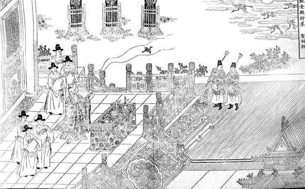
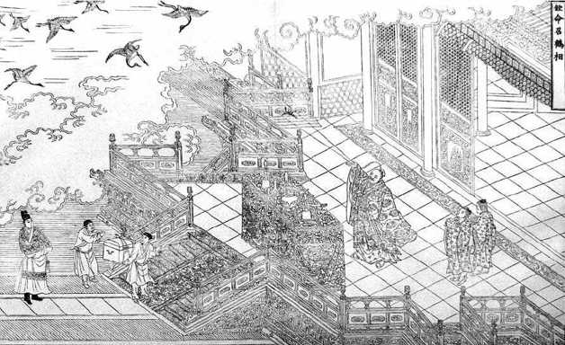

嘉靖四十五年，公元1566年，对于大明臣民，是一个特殊的年份。
是年，严嵩以八旬之龄在老家死于贫病。奇怪的是，他一死，二十年来一直以在幕后操纵他为乐事的“木偶艺术大师”嘉靖皇帝，也赶在年底厮跟着去了，似乎不能承受自己最听话、最顺手、最出色的一只玩偶的消失，而倍感寂寥，了无生趣。
也是这一年，赶在嘉靖驾崩之前，突然冒出来一个数十年不遇的“胆大狂徒”，递上一份火爆异常的奏疏，指名道姓把奄奄一息的嘉靖痛骂一番，作为对他即将远行的赠别。
这位让人瞠目结舌的仁兄，就是海刚峰海瑞。
朝中士风奸猾日久，只闻歌功颂德之音，就算人格尚存者，至多也是保持沉默，事不关己，高高挂起，行使其“不说话的自由”。怎么一下子有这样一个生猛的“另类”从天而降？
话得从头说起。
这海瑞，乃当时的琼州、今之海南省人氏。琼州于中原，遥远之极，“天涯海角”；古时交通讯息又极不便捷，数千里的空间距离，足让人“不知有汉，无论魏晋”。海瑞既生偏僻之地，又出于老派知识分子之家，“不识时务”实乃必然。此外还有一点，海瑞只有半截科举功名。他在嘉靖二十八年乡试中了后，会试落第，此后就放弃了进士考试，“学位”只及举人。“学历”不高，只能从地方和政界低层干起，这一干，就将近二十年。在北京的精英们眼中，他无疑是个没见过世面的乡巴佬，对“新思想”“新动向”懵然无知，不懂“规矩”，不了解时兴什么，对首都的人情世故更是两眼一抹黑。这的确是事实。除了那年会试海瑞短暂到过一趟京城，随后就在浙闽赣一带小县城游宦，直至嘉靖四十三年，因为一个意外机遇，他被提拔为户部主事，这才把脚踏进北京城。至今，北京人仍喜欢称外地人“傻帽儿”，初来乍到而出生偏远、履历始终不超县城范围的海瑞，想必就属于一个“傻帽儿”。到北京方才一年出头，他既不静观默察，也不做深入的“调查研究”，只凭个人信念和一腔激情，冲动上书，惹下杀身之祸。自政界的京油子们看来，这大抵也算一种“无知者无畏”。《明史》这样交代海瑞上疏的背景：
时世宗享国日久，不亲朝，深居西苑，专意斋醮。督抚大吏争上符瑞，礼官辄表贺。廷臣自杨最、杨爵得罪后，无敢言时政者。四十五年二月，瑞独上疏曰……[100]
明确指出自杨最、杨爵后，“无敢言时政者”。杨最，太仆卿，他起来反对嘉靖崇信道教，是在嘉靖十九年，被廷杖，当庭殴毙。杨爵，御史，嘉靖二十年上疏力陈崇道之非，下狱严刑重惩，打得血肉横飞，全无人样。那时，嘉靖刚刚显示出沉溺斋醮之事的迹象。换言之，自从杨最、杨爵被镇压后，举朝上下，全都“识时务者为俊杰”，绝口不谈皇帝陛下的这点“私人爱好”。足足二十五年后，才出来海瑞这么一个“傻帽儿”，“独上疏曰……”——一个“独”字，写尽京城官场气象和士大夫中间流行的“潜规则”。由是观之，海瑞不是“无知者无畏”，是什么？
无畏海瑞，大骂嘉靖“竭民脂膏，滥兴土木，二十余年不视朝，法纪弛矣……以猜疑诽谤戮辱臣下，人以为薄于君臣。乐西苑而不返，人以为薄于夫妇。吏贪官横，民不聊生，水旱无时，盗贼滋炽。”经他描述，嘉靖统治下的大明国不是好得很，而是糟得很。从朝中到乡野，一团漆黑，无一是处。如此“发飙”已足令人大惊失色，尤有甚者，海瑞更把矛头指向嘉靖头顶上那块“癞疤痢”——最说不得、不容人说的崇道之事。他毫不留情地概括道：“陛下之误多矣，其大端在于斋醮。”因为斋醮，“左右奸人，造为妄诞以欺陛下”，皇帝不“讲求天下利害”，而有“数十年之积误”；也因这缘故，诸臣共蒙“数十年阿君之耻”，“大臣持禄而好谀，小臣畏罪而结舌”。[101]
这就是名垂青史的“海瑞骂皇帝”的《治安疏》。
疏入，嘉靖览之大怒。史书描写他的情形是：“抵之地，顾左右曰：‘趣执之，无使得遁！’”把海瑞奏章摔在地上，对身边人大叫：赶紧给我把这人抓起来，别让这小子跑了！据他想象，写这东西的家伙，肯定于递上来的同时，就脚底抹油，溜之大吉；因为已有好些年了，他未曾见过一个不怕死的官员。可是，宦官黄锦却告诉他：此人素有“痴名”（“傻帽儿”的书面语），上疏之时，已买好一口棺材，跟妻、子诀别，让僮仆四散逃命，自己却在朝门之外安静地等死。嘉靖一听这话，反而如泄气的皮球，不知所措。很意外地，他只吩咐把海瑞送入诏狱审问，再移送刑部判决，刑部揣摸情形，自然判了死刑，但嘉靖却把这判决“留中”数月，不予执行。
海瑞究竟怎样捡了条命，以必死之罪而不死？说起来，纯属运气太好。这奏疏的出笼，哪怕略早上个二三年，十个海瑞也小命玩完。
《治安疏》之上，距嘉靖翘辫子只十个月。其时，嘉靖的健康每况愈下，长期服食丹药的恶果显露无疑，这些东西由金石铅汞等物制成，实际就是毒品，经年累月沉积体内，致嘉靖最后慢性中毒而死。死前数月，他虽嘴硬，内心却隐然有悟，情知病症系由服食丹药而来。因此，海瑞的猛烈抨击，他尽管在心理和面子上接受不了，理智上却颇有触动。史载，他不止一次悄悄拿出《治安疏》来读，“日再三”，而且“为感动太息”，对近侍说：“此人可方比干（商纣王著名的批评者），第朕非纣耳。”他召见首辅徐阶，明确承认在崇道上误入歧途，损害了自己的健康：“朕不自谨惜，致此疾困。使朕能出御便殿，岂受此人（海瑞）诟詈耶？”一副无可奈何的口吻。[102]
这样，海瑞捡了条命，嘉靖则用不杀来婉转地表示对海瑞敢于“讲真话”的赞赏。可笑的是，他非把自己搞到奄奄一息的地步，才肯面对真话，否则就坚定不移地拒绝真话、索取假话。这倒也是古来独裁者的共通之处。
明代皇帝，大半缺心眼，智商水平不高。而嘉靖这人，是其中最聪明的一个。他享国四十五年，历来最长，国家虽然一如海瑞抨击的那样腐败黑暗，从他个人统治权威来看，却不曾出过什么大乱子。[103]这很少见。无论是他的前任或后任，好些皇帝，在位不过数年或十几年，却焦头烂额，甚至陷自己于严重危机之中。嘉靖则显示了出色的统治技巧，对局面的掌控滴水不漏、游刃有余。以他的精明，倘若用在正道上，肯做一个有为之君，原是可以寄予期待的。可实际不是这样，他把他的精明，尽数用在权术上，只对高层政治斗争感兴趣，对国与民则未利分毫。
往往，绝顶高手无人可以击倒时，人们就可以等候他自己把自己击倒。嘉靖似乎就是这样。我们看他的为君之术，门户甚严，无懈可击，永立不败之地，没人钻得了他的空子。然而任其武功再高，也不免有某个致命的命门。嘉靖聪明一世，糊涂一时，严于防人，疏于防己。当他把所有人都整得没脾气时，他唯独忘记了防范来自自己的进攻。而那恰恰是他毕生最热爱、视为理想的崇道事业。他的一生，除此可以说没有别的追求，偏偏是这唯一的追求，将他最后彻底毁掉。
他的道教信仰，据说由父亲兴献王启蒙，“根红苗正”，与半途自己发展起来的兴趣很不同。从心理学可以知道，男孩的人格长成，来自父亲的影响最重要，根深蒂固——“像父亲那样！”男孩的基本行为和意识，大多以父亲为戏仿对象而培养起来。当年，朱祐杭与道士过从甚密的情形，必然早早地在小嘉靖心中引起摹仿的愿望，而且，这愿望将伴之终生。
登基为帝以后，兴趣时有显露，也曾引起辅臣们的关切。但头十年光景，尚未完全沉湎其中，因为立足未稳，大局待定，政治斗争仍很激烈，容不得他专心致志地奉道求仙；同时，也因为他对在儒家意识形态上继往开来，兴致正浓，极欲有所建树。
及至统治期的第二个十年，“大礼议”及改正祀典等战役大获全胜，将反对派一扫而空，士大夫们被收拾得服服帖帖，闲暇渐多，从此开始大弄。而十八年和二十一年先后遭遇的两难，尤其起到推波助澜的作用。
嘉靖十七年十二月，母后蒋氏病逝。嘉靖决定“奉慈宫南诣”，与父亲同葬一穴。翌年二月，从北京动身。这是嘉靖一生唯一一次离京出巡。行至卫辉府（今河南汲县），“白昼有旋风绕驾不散”。古时相信被旋风绕身是不吉利的，于是嘉靖请随行的道士陶仲文解释此事，陶告诉他说，这股旋风是即将发生的一场火灾的预兆。嘉靖命令陶仲文用法术阻止火灾到来，后者却回答说：“火终不免，可谨护圣躬耳。”避免不可以，不过皇帝的安全不成问题。夜间，行宫果然燃起大火，“死者无算”，嘉靖也身陷烈焰之中，然而，警卫团官员（锦衣卫指挥）陆炳却及时赶到，“排闼入，负帝出”。[104]
对这件事，任何理性主义者都会本能地怀疑并非巧合，是陶仲文和陆炳串通起来，做了手脚。而且，这样的骗局，几乎没有难度。在当代“大气功师”们手中，比这复杂、巧妙、隐蔽百倍的骗局，照样成功。
效果一目了然：当年九月，陶仲文被封“真人”，领道教事、总各宫观住持，成为道教全国最高领袖。陆炳亦由此发迹，终掌锦衣卫（警察头子），与严嵩并为两大实权人物。而嘉靖本人所受的影响更深，他完全被道教的“神奇”所折服，以至于回到北京后就对辅臣们宣布，打算“命东宫监国，朕静摄一二年，然后亲政”。[105]太仆卿杨最，正是在闻悉这个谕旨后，表示反对，而被当庭杖毙。
“监国之议”和杖毙杨最，是嘉靖试图一意修玄的重要信号，但让他终于做出这一决定的，是另外一个事件，两年后的一次针对他本人的宫庭谋杀案。
案发时间：二十一年（壬寅年）十月二十一日，深夜至天亮之间。案发地点：乾清宫后暖阁嘉靖皇帝卧处。案犯：以杨金英为首，共十六名宫女。作案工具：黄花绳一条，黄绫抹布二方。作案手段：大家一齐动手，趁嘉靖熟睡之际勒死他。作案动机：不明。
此案的记述，《实录》及民间史详略不一。我们加以综合，复原如下：
准确的案发时刻无从确定，总之是嘉靖沉睡之中，因此应该发生在深夜至黎明之间这段时间。据说，当晚嘉靖是由所宠爱的端妃曹氏侍奉入眠。等他睡熟之后，杨金英等十几名宫女，结伙进入寝室。女孩们手拿绳索和抹布，把绳索套在嘉靖喉颈处，将抹布塞入他口内（防止出声过大），有人负责拉紧绳索，另外几个人跳到嘉靖身上，压住他，阻止他挣扎。绳索勒紧时，嘉靖喉管里发出咯咯之声，“已垂绝矣”。但是，这些柔弱的小女子，手中气力实在有限；同时，或者因为慌乱，或者因为“不谙绾结之法”，她们套在嘉靖脖中的绳索，竟然是死结，拽了很长时间，仍未令嘉靖殒命。恐惧中，有人经不住考验，动摇。一个叫张金莲的宫女，悄悄逃脱，敲开方皇后宫门告密。方后带人火速赶到，将谋杀团全体佳丽当场捉拿。随后，展开急救。工程建设部部长（工部尚书）兼皇家医院（太医院）院长许绅主持专家抢救小组，决定以桃仁、红花、大黄诸药配伍，制成“下血药”，于辰时（上午七时至九时）灌服。嘉靖一直昏迷，灌药后继续昏迷。直到未时（下午一时至三时），“上忽作声，起，去紫血数升”。又过一个时辰，“能言”，终于说话了。
由方皇后亲督，抢救的同时，对案件的查究也在进行。当场捉住的凶手里面，名分最高的是被封为“宁嫔”的王氏。但是，端妃曹氏虽然不在现场，也被认定参与谋逆。观察家认为，方皇后于嘉靖“未省人事”之时，“趁机滥入”，“其中不无（方皇后）平日所憎”；换言之，方皇后抓住这个机会，好好地摔了一回醋坛子——实际上，她是用另一形式，也参加到对嘉靖的宣泄中来。
在后来刑部奉旨法办的案犯名单中，没有端妃曹氏。这并不表示她被放过，相反，观察家认为，方皇后做得更绝，早在移送刑部之前，曹氏已然“正法禁中矣”。最后公布的全部宫婢人犯是以下十六位：
杨金英 杨莲香 苏川药 姚淑翠 邢翠莲 刘妙莲 关梅香 黄秀莲 黄玉莲 尹翠香 王槐香 张金莲 徐秋花 张春景 刘金香 陈菊花
那个临阵动摇、通风报信的张金莲未得宽宥，也在其中，理由是：“先同谋，事露始告耳”。嘉靖决定给女孩们如下处置：先凌迟处死，再加以肢解（“剉尸”），再割下头颅（“枭首”）示众。“行刑之时，大雾弥漫，昼夜不解者凡三四日。”她们的家人也都不同程度受到牵累，有被处死，有被充为奴。
一群宫女，为何以必死的决心，起来谋害嘉靖？这已成永远的秘密。审讯是在紫禁城内完成的，真相只有嘉靖本人、方皇后和极少数内监知道。《实录》对此讳莫如深，只说“诸婢为谋已久”[106]，就这么六个字。透过“已久”二字，我们隐约猜见事情非起自于一朝一夕，实在到了忍无可忍的地步。总之，这些姑娘们于夜色中走近嘉靖卧榻时，明白地采取了荆轲式的一去不复还的姿态；成也罢，败也罢，等候她们的好歹都是一“死”。她们是决计抛别自己性命了，唯一目的仅仅是让嘉靖去死。这究竟为什么？因为宫中寂寞、青春无望？不可能。古来多少宫女遭受同样命运，却从来没有人为此去拼命。这更不是争风吃醋，十几名女子同声相应、同气相求，肩并着肩，迈向睡梦中的嘉靖——这是暴动，是复仇，是索命，是“血债还要血来还”。我们无法说出，但我们知道，她们必定经历了非人的对待，而且是长期的、看不到尽头的。
这桩谋杀案，史称“壬寅宫婢之变”。
一次火灾，一次谋杀，两度直面死神。尤其后面这次，差不多等于死过一回，让本就惜命非常、疑神疑鬼的嘉靖，惊恐万状。一只脚踏上了奈何桥却又侥幸抽身回到人间的他，无法再在乾清宫安睡，乃至对整个紫禁城都产生心理障碍。“说者谓世宗以禁中为列圣升遐之所，而永寿则文皇旧宫（西苑永寿宫，为朱棣燕王府旧址），龙兴吉壤，故圣意属之。”[107]因此，他执意迁往永寿宫，“凡先朝重宝法物，俱徙实其中，后宫妃嫔俱从行，乾清遂虚”[108]。（当他再次回到这里，已经是具尸体——嘉靖四十五年十二月死后，停柩于此。）
他丢下国家、人民、大臣和皇宫，甚至部分丢下对权力和虚荣的欲望，不顾一切地逃命去了——身体逃往西苑，灵魂则逃往道教。“上既迁西苑……不复视朝，惟日夕事斋醮。”[109]“宫婢之变”也许并不是嘉靖沉迷道教的分水岭。这以前，他的兴趣已经极浓厚。不过，他全面推掉政务，不再履行国家元首的义务，确从“宫婢之变”开始。
此时，他三十来岁，春秋正盛，却已经生活在来日无多的恐惧之中。尽管对死亡的恐惧，不分贵贱，人所共有。但细分辨，其实并非一事。普通人所忧者，是生存之艰，他们度日如年，多活上一天便是幸事。皇帝——四面楚歌、山穷水尽者除外——却忧无可忧，生存对他们来说不构成任何压迫，而惟一不能克服和必须面对的，只是“螣蛇乘雾，终为土灰”，亦即，他们再拥有一切，却独独不能终免一死。普通人一生随时面临失去，体验失去，而帝王则只担虑一件事——失去生命。就此论，死之恐惧带给帝王的心理压力，远大于普通人。
大多数人到了精疲力衰的老年，心中才有空暇去考虑死亡。我们的嘉靖皇帝，年纪轻轻，却已经深深陷于对死的焦灼。上帝是公平的，他一面让嘉靖这种人忧无可忧，几乎找不到任何可以担心的事，一面让他才三十来岁就没日没夜地为死而牵肠挂肚、愁眉不展、心惊肉跳。就我个人而言，宁肯生活经历多一些困境，也不愿三十来岁的时候就只能操心一件事情：怎样可以长生不死。
从三十来岁到六十岁，二十多年中，嘉靖就只活在这一个念想里面。这其实是一种极其严酷的生存。严酷之处不仅仅在于恐惧，而且在于他不得不想办法来消除这恐惧。后者是最糟的。试问能有什么办法呢？请注意，他关心的并非“健康”，而是“不死”。倘若仅仅是“健康”，办法很多：好的饮食、生活习惯、心性调养……都能够起作用。但不是，他想要的不是“健康”，是“不死”——这其实根本没有办法。然而他又一定要找到办法，不找到不行。于是，麻烦、危险悄悄地走近他，而他也飞蛾扑火般兴高采烈地迎上前去。他们彼此拥抱，互相觉得可爱。这样的迷恋，一直延续到嘉靖行将就木之前。
论史者多认为嘉靖死于崇道。非也。嘉靖之死，死于自己，死于心魔。世上本无事，庸人自扰之。固然从邵元节开始，嘉靖身边的道士极尽欺骗之能事，但说到底，骗术奏效终因嘉靖宁信其有、不信其无，自家心里预设了那种期待，稍有巧合，他不觉得事情本来如此，却认定是法术灵验或虔求所致。
诞生皇储的事情就很典型。嘉靖即位十年，迟迟未生皇子，他自己急，臣子也急。行人司有个叫薛侃的官员，竟提出“宜择宗室之亲贤者留京邸，俟皇子生而后就国”[110]，语气全然对嘉靖能否生子很表悲观，惹得嘉靖“怒甚”。总之，压力很大。道士邵元节趁机劝嘉靖设醮求嗣，正中他下怀。从十年十一月开始，在宫中正式设醮坛，由礼部尚书夏言专任“监礼使”，嘉靖本人和文武大臣轮流上香。此事持续了很久，直到第二年十一月，翰林院编修杨名还上疏敦促停止醮祷，说“自古祷祠（祀）无验”[111]。谁料想，几乎同时，后宫传来阎氏——后被晋封为丽妃——受孕的喜讯。十个月后，嘉靖十二年八月，阎氏为嘉靖产下他的第一个儿子。虽然这孩子命薄，只存活了两个月就死掉，但邵元节法术奏效却似乎是不争的事实，而且三年后的嘉靖十五年，昭嫔王氏又产一子。《明史•邵元节传》说：
先是，以皇嗣未建，数命元节建醮，以夏言为监礼使，文武大臣日再上香。越三年，皇子叠生，帝大喜，数加恩元节，拜礼部尚书，赐一品服。[112]
耳听为虚，眼见为实。邵元节弄法之前，膝下十年无子；自打邵元节建醮，“皇子叠生”。这叫“事实胜于雄辩”！嘉靖认为，所有攻击邵元节、道教和他的信仰的人，统统可以闭嘴了，于是隆重奖掖邵真人邵大师。但他偏偏忘记，在装神弄鬼之前，邵元节早已帮助他打下了雄厚的“物质基础”——那便是广选“淑女”，例如《实录》记载，建醮当年的正月，曾有“淑女四十八人”入宫[113]；这应该是不完全的记录，因为我们发现《实录》对此类细节有时记载，有时却加以隐讳。另外，不能排除邵元节会采取某种药物来帮助受孕，高级道士身兼医药家的情形并不少见，有记载证实，这个邵元节起码在研制春药方面颇具造诣，而且确实卓有成效。嘉靖却不屑于现实地看待“皇子叠生”现象，而宁可将它理解为神迹，原因是这种理解更能满足他内心许多深远的想象和诉求。
神秘主义的东西，关键在于“信”。因信成义。信则灵，不信它就拿你一点办法没有。嘉靖最不缺的，就是这个“信”字。“皇子叠生”他相信是邵元节祷祀灵验，太子出牛痘痊愈他相信是陶仲文法术成功，连鞑靼边患的解除，也被他认为“实神鬼有以默戮之”[114]。

明司礼监刻本《赐号太和先生相赞》图一，钦命招鹤相。太和先生，即朱厚熜所宠信的龙虎山上清宫道士邵元节。图中描绘了邵元节应朱厚熜之命作法的情形。鹤寓长寿意，为道教瑞物，常与仙家相伴。

明司礼监刻本《赐号太和先生相赞》图二， 钦安殿祈求圣嗣相。
求圣嗣，即为朱厚熜求子。图中， 邵元节放出一只小鹤，飞向空中几只大鹤， 是向上仙通其消息的意思。能够做到这一点， 邵元节至少很好地掌握了驯鹤技术。
因为只信不疑，不要说半真半假的骗术，就连仅以常识即可知为虚妄的骗术，也轻易被他照单全收。甚至骗术戳穿后，还是无所触动。例如段朝用事件。段朝用，庐州（今合肥）人，先为武定侯郭勋（当时勋贵中一大丑类，从“大礼议”到崇道，对嘉靖步步紧跟）延于府中，声称“能化物为金银”[115]，更进一步吹嘘，经他点化的金银，制成器皿，“饮食用之可不死”。[116]这还了得？陶仲文就把段推荐给嘉靖。神奇法术，嘉靖之最爱；兼有郭勋、陶仲文两大“最具信誉度爱卿”做担保，段朝用马上入宫，被封“紫府宣忠高士”，同时赏赐郭勋。段氏自然没有“能化物为金银”的本事，最初献出的器皿，所用金银都是偷盗来的。入宫后，嘉靖索取甚多，段氏渐不能支，无奈之下他想出各种巧妙借口，奏请国库支与银两，先后达四万余两——嘉靖居然不曾想一想，一个能点物为银的人，反而伸手向他讨要银子！须知嘉靖并非白痴，智商不弱，在玩弄政治权术上我们已充分见识了他的精明。惟一合理的解释，他对于道术实在太过迷信。久之，段朝用的“科研成果”，势必越来越少，嘉靖也感觉到了不满意。正当此时，段的一个小徒弟因为和师父闹意见，忿而举报真相，如此如此，这般这般；论理，段朝用完了，该有灭顶之灾，可是糊涂嘉靖先将段下锦衣卫狱，却很快又饶了他，只给他降级处分，“改羽林卫千户，又改紫府宣忠仙人”[117]——从“高士”改为“仙人”，如此而已，在我们看来这种称号上的改动简直没有什么分别——继续让他从事点金术科研工作。段朝用难以为继，也走投无路，末了，狗急跳墙，做出疯狂之举：采取现代黑社会手法，绑架郭勋的一个奴仆张澜，“拷掠之，且曰：‘归语而（尔）主（指郭勋），馈我金十万，当免而主追赃。”张澜不曾答应、也没法答应他，段朝用继续折磨，直到把张澜搞死。段骑虎难下，以羽林卫千户身份反咬一口，“乃上言勋奴行刺，为己所觉，邂逅致毙”。这次，当然再也糊弄不过去，“下诏狱讯治”，“瘐死狱中”。[118]
段朝用活该，不过比之邵元节、陶仲文，我还是略为他抱一点不平。段落得如此下场，不是因为嘉靖幡然猛醒，只是因为段在以妖术邀宠上选择了错误路线。“点物成金”类似“硬气功”，一切落在实处，立竿见影，露馅儿的可能性太大；就此言，段氏作为一个骗子，有其不够滑头处。而邵元节、陶仲文之流，对这种一招一式见“真功夫”的活计，是绝对不揽的。他们云山雾罩，用无法证实（同时也不可能被人去证伪）的玄虚理论向嘉靖描绘美好远景，开空头支票，而在次要环节、局部问题上，运用魔术家和医药家——在这两方面他们是略知一二的——的技能，让嘉靖“眼见为实”，取得信任，从而长久立于不败之地。这两个人，骗了嘉靖一辈子，而且是嘉靖折寿的最大的罪魁祸首，但都安然善终，并收获高官厚禄。邵元节官至礼部尚书，给一品服俸；嘉靖十八年病死北京，得到隆重追悼，追赠少师，葬同伯爵。陶仲文更于生前就尊荣已极，嘉靖历年给他的地位和待遇共计有：光禄大夫、柱国、少师、少傅、少保、礼部尚书、恭诚伯、兼支大学士俸[119]，“一人兼领三孤（少师、少傅、少保），终明世，惟仲文而已”[120]，论地位，内阁首辅犹在其下。
邵元节死的那年，“宫中黑眚见（现），元节治之无验，遂荐仲文代己，试宫中，稍能绝妖，帝宠异之。”[121]黑眚，是古人所认为的一种由水气而生的灾祸，以水在五行中为黑色，称“黑眚”。《铁围山丛谈》：“遇暮夜辄出犯人，相传谓掠食人家小儿……此五行志中所谓黑眚者是也。”这件事，肯定是邵、陶二位老友之间串通好，联手出演的一幕魔术。邵元节临死前，需要找一个可以信任的人替代自己，继续控制嘉靖，从而保护自己的家人（其孙邵启南、曾孙邵时雍都“一人得道、鸡犬升天”，在朝中做官），而陶仲文正想接替他的事业，两人一拍即合，设计了这个节目在嘉靖面前表演，使陶轻而易举获得嘉靖信任。
读这段故事，我油然想起当初在巴黎，李斯特为了将肖邦引荐给法国上流社会所用的手法：那是一个令人愉快的夜晚，在专为巴黎名流准备的钢琴独奏沙龙上，有史以来最伟大的钢琴大师李斯特用他绚烂的技巧，迷住了在场每个人。整个大厅，只有一盏孤烛在大师的琴台上照耀，突然，一阵风吹过，蜡炬熄灭，然而琴声丝毫未断，当烛台再次点亮时，所有人都惊呆了——在钢琴前演奏的人，不是李斯特，是一个面色苍白的年轻人。这是不可思议的。试想，竟然有人可以悄然取代李斯特大师的演奏而骗过了所有人的耳朵！一夜之间，肖邦这个名字传遍巴黎……
邵元节以陶仲文代己，跟李斯特以肖邦代己，手法如出一辙，只不过需要额外玩一把魔术罢了，而这样的魔术，对邵、陶来说不算什么。比这更复杂的魔术，嘉靖年间的道士也曾成功上演过。《万历野获编》记载，与嘉靖同样热爱道教的徽王朱载，“尝于八月十五日凝坐望天，忽有一鹤从月中飞下殿亭，鹤载一羽士（道士），真神仙中人也，王喜急礼之，与谈大快……”大快之余，道士成功骗得万金而去；后一日，“有司擒道士宿娼者来，疑其为盗”，徽王一见，正是跨鹤自月中来的“神仙”。对方供认，他们其实是武当山道士。沈德符的评论非常正确：“总之，皆幻术也。”[122]这样的大型魔术都能玩得，可见明代中国魔术水平之高，邵、陶的“黑眚魔术”岂非小菜？
当然，仅有瞒和骗是不够的，他们也必须在某些地方拿出“真才实学”，让嘉靖通过本人、在自己身上切切实实看到效果。他们可以一显身手之处，是“进方”。方者，药之配伍也。道家修行者有个别名叫“方士”，即因他们以长生不死为最高愿望，孜孜以求，不遗余力去发明“长生不死之药”，而得了这样的称呼。
他们的目标虽然是虚幻的，但在致力于这目标的过程中，却也的确对药物的种类、性质、作用有所了解，而普遍拥有医药家的知识和技能。中国古代，除职业医家外，对医药学贡献最大的，就是道家方士。例如东晋高道葛洪记述过天花、肺疾、麻风的病状，也研究出一些治病的药物和方剂，名气很大，至今还有一种治疗脚气的药水打着“葛洪脚气水”的旗号。南朝炼丹家陶弘景撰写了七卷《本草经集注》，是药物学名著。孙思邈以“药王”名垂史册，其实他也是一位炼丹家。有学者指出：“整个看来，中国古代医药化学成就主要是从炼丹的活动中取得的，人工合成的矿物药剂的最早丹方也主要见于炼丹家的著述。”[123]
然而，因为目的全然错误，道家方士的医药家这一面，真真假假，经验与邪术并存，不全是外行，但绝对不是货真价实的医生，他们在取得你信任的同时，往往把健康和生命的巨大风险不知不觉地带到你身边。
历史记载中，有几次嘉靖或太子朱载垕患病，经邵、陶等祷祀痊愈，极可能是暗中用药的结果。这属于通过消病免灾来换取嘉靖对其“法术”的笃信。此外还有一种情形，即无病状态下，以“养生”的成效，让嘉靖获得神奇体验。
其中，性体验或与性有关的生命体验，是最突出的内容。性，在人生命中显而易见的盛衰过程，本身具有对健康状况的极大心理暗示作用；性功能强劲，是生命力旺盛的表征，反之，人普遍认为自己精力趋于衰竭。正基于此，道家十分重视这方面的修炼，既以性行为为改善和增强生命机能的手段，也把改善和增强性机能当做修行效果的检验标准。因此，道家一直以来既保持着研究“房中术”的传统，同时，也从男女两性生理出发，臆想了许多奇怪神秘的理论，从中进行药物学的发掘和实验——把这两个层面简单概括一下，分别是“性交技巧”和“春药”，而这两者的一致作用，据说都有助于养生和长寿。
邵、陶之流恐怕在两个层面都有献于嘉靖，而以“春药”更突出。由于这种事特有的隐秘性质，我们实际无从确知他们提供的“春药”真实详尽的内容，因而也无法用现代实验手段证实它或否定它。不过，从当时的记载看，效果竟然是确凿的。《万历野获编》有两条记载：
时大司马谭二华纶受其术于仲文……行之而验，又以授张江陵相（张居正）……一夕，（谭纶）御妓女而败，自揣不起，遗嘱江陵慎之。张临吊痛哭……时谭年甫逾六十也。张用谭术不已。后日以枯瘠，亦不及下寿而殁。（陶仲文之术）前后授受三十年间，一时圣君哲相，俱堕其彀中。[124]
“行之而验”，很明确，且非孤证，嘉靖之外，尚有名臣试之见效。第二条说得更具体：
嘉靖间，诸佞倖进方最多，其秘术不可知。相传至今者，若邵、陶则用红铅，取童女初行月事（少女初潮）炼之，如辰砂以进。若顾（顾可学）、盛（盛端明）则用秋石，取童男小遗，去头尾炼之，如解盐以进。此二法盛行，士人亦多用之。然在世宗中年始饵此及他热剂，以发阳气。名曰“长生”，不过供秘戏耳。至穆宗（朱载垕，隆庆皇帝，嘉靖第三子）以壮龄御宇，亦为内官所蛊，循用此等药物，致损圣体，阳物昼夜不仆，遂不能视朝。
沈德符很谨慎地指出，真正的配方已“不可知”，他所叙述的，乃“相传至今者”。但对这些春药的奇效，他相当肯定，尤其隆庆皇帝用后“阳物昼夜不仆”一语，令我们想起同样成书于嘉靖年间的《金瓶梅》对西门庆之死的描写，应该说不是虚言。
更有力的佐证，来自以下史实——嘉靖年间，多次从民间征选幼女入宫。我们在《国榷》中找到了几例这样的记载：
二十六年二月“辛丑，选宫女三百人”。[125]
三十一年十二月“配朔，选民女三百人入宫”。[126]
三十四年九月“戊戌，选民女百六十人”。[127]
仅三笔记述，即达七百六十人。这些女孩，在八岁至十四岁之间，年龄分布很符合取“红铅”的目的，有立等可取者，也有蓄之以充后备军者，同时，这时间段正好是陶仲文为嘉靖所倚重的全盛时期（陶卒于嘉靖三十九年）。
王世贞有一首《西城宫词》，阴指此事：“两角鸦青双结红，灵犀一点未曾通。自缘身作延年药，憔悴春风雨露中。”
一切迹象表明，嘉靖年间，尤其嘉靖中年以后，宫中长期、持续而有计划地执行焙炼及供应“红铅”的任务。嘉靖必定感觉“药方”奏效，方才形成如此长期的需求。但所谓有效，实质不过如沈德符所言：“名曰‘长生’，不过供秘戏耳。”亦即，在性事方面显出了效果，与“长生”并无关系。但是，道家偏偏对性事与长生之间的关系，独有一套神秘主义理论，嘉靖很容易从性事的有效而相信此必有助于长生。
嘉靖所能看到的，只是服药后床笫
之间雄壮有力，抑或身轻体健而已，他根本不知道吞入腹中的究竟是什么、各种成分的药理作用如何。在现代，任何受过一定教育的普通人，都懂得用药安全问题，都明白只能服用经过严格动物、人体实验，被证明确有疗效并且安全可靠的药物。可叹嘉靖身为皇帝，人间至尊，却勇于尝试一切完全不知来历的药物，承担连现代药物实验志愿者都不可能承担的风险。念及此，人们与其羡慕那些皇帝，倒不如好好地可怜他们一番哩。
世事真是奇怪。嘉靖此人，一生“图迥天下于掌上”，谁也斗不过他，但命运还是给他安排下一个劲敌，一个死敌；那，就是他自己。当把所有人收拾得服服帖帖、唯唯诺诺之后，他似乎无事可做，于是开始跟自己较劲。他把自己分作两派，一边是皮囊，一边是灵魂。皮囊循着自然和上帝的旨意，生长、衰老、走向终点，灵魂却恐惧地大叫：“不！”灵魂一边不停地嘶喊，一边搬来援兵——五花八门的长生不死之药。这些援兵，非但未能延缓皮囊老去的步伐，反而加速了它，以至于最后从结果来看，简直是引狼入室——这些援兵成了皮囊坏朽的最大帮凶。
嘉靖就这样自己把自己整死了。
不必留待现代医学的检验，对嘉靖之死，当时的看法便非常明确一致：药物中毒。“其方诡秘不可辨，性燥热，非神农本草所载。”[128]例如《明史》提到，方士所进药物之中，居然有以水银制成[129]。如此剧毒成分，都是摄服对象，危害可想而知。没有人能够回答，他这一生究竟把多少种毒素请入自己体内，但相关记载却足够让我们去想象他的疯狂：
帝晚年求方术益急，仲文、可学辈皆前死。四十一年冬，命御史姜儆、王大任分行天下，访求方士及符箓秘书……上所得法秘数千册。[130]
对这数千册“法秘”，他居然如获至宝，大大赏赐姜、王二人。他的确已经癫狂，连内侍悄悄放在其床褥案头的药丸，也信为天赐，郑重其事吩咐礼部举行“谢典”。[131]直到最后时日，死神走来，他才若有所悟：“朕不自谨惜，致此疾困。”
《明史纪事本末》以专门一卷，单独叙述嘉靖崇奉道教之事。作者谷应泰，终篇处以如下话语具结：
语云：服食求神仙，多为药所误。又云：君以此始，必以此终。
吁！可慨也夫！[132]
“君以此始，必以此终”，精彩精彩。又说：
世宗起自藩服，入缵大统，累叶升平，兵革衰息，毋亦富贵吾所已极，所不知者寿耳，以故因寿考而慕长生，缘长生而冀翀（鸟直飞升状，借喻成仙）举。
天道诡异。历来，做皇帝能做得这么顺当，凤毛麟角。倘嘉靖无此爱好，我们看不出有何原因能够妨碍他享受“清平乐”。然而一股奇怪的力量偏偏让他自滋事端，且沉溺如此之深，在毒素的攻逼下了却残生。
其实，最终被自己所坚信不移的东西所击倒和戕害，往往是唯我独尊者无法逃脱的命运。嘉靖爱道教，我们也因为他爱道教而爱道教。感谢道教，感谢嘉靖狂热地信仰它，感谢邵元节、陶仲文等所有向嘉靖进献毒药的道士们。否则，世上还真没有其他东西，能让这个海瑞在《治安疏》里骂得狗血淋头的皇帝，略微遭到些许的报应。
[1] 黄仁宇《万历十五年》第五章。
[2] 《人民日报》1959年6月16日。
[3] 黄仁宇《万历十五年》第五章。
[4] 《明史》列传第七十八。
[5] 《世宗实录》卷一。
[6] 《世宗实录》卷一。
[7] 同上。
[8] 原为明清皇城第一门，清代改称大清门，民国称中华门。原址在今正阳门之北、毛主席纪念堂一带。毁于1954年。
[9] 土木之变后，英宗朱祁镇为瓦剌俘虏，由皇太后指定，郕王朱祁钰奉命监国摄政，后经廷议，即位为君。这属于危难之时为应付紧急情况而发生的事情，并非正常的继承。
[10] 《万历野获编》卷二，列朝，世室。
[11] 《万历野获编》卷二，列朝，触忌。
[12] 《明史》列传第七十八。
[13] 《明史》列传第七十八。
[14] 同上。
[15] 同上。
[16] 《明史》列传第七十八。
[17] 《世宗实录》卷一。
[18] 同上。
[19] 程颐《代彭思永上英宗皇帝论濮王典礼议》，《河南程氏文集》卷五。
[20] 《明史》列传第七十九。
[21] 《明经世文编》卷一七六，张文忠公文集一。
[22] 欧阳琛《王守仁与大礼议》，《新中华》1949年第12卷第7期。
[23] 《明儒学案》卷十，姚江学案。
[24] 同上。
[25] 《明史纪事本末》卷五十，大礼议。
[26] 同上。
[27] （美）苏均炜《大学士严嵩新论》，《明清史国际学术讨论会论文集》第828页。
[28] 《世宗实录》卷七。
[29] 《左传》成公二年。
[30] 《世宗实录》卷九。
[31] 《世宗实录》卷二十一。
[32] 《世宗实录》卷二十二。
[33] 《世宗实录》卷三十四。
[34] 《世宗实录》卷三十五。
[35] 《明史》列传第七十九。
[36] 《明史》列传第八十四。
[37] 《明史纪事本末》卷五十，大礼议。
[38] 《明史》列传第八十四。
[39] 《明史纪事本末》卷五十，大礼议。
[40] 《世宗实录》卷四十三。
[41] 《世宗实录》卷七十九。
[42] 《易》序卦，传。
[43] 钱穆《朱子学提纲》第6-7页。
[44] 《中国大历史》第200页。
[45] 《隋书•经籍志》：“凡祈禳祭告，必记醮奏章，称奏章之文曰青词。”
[46] 李肇《翰林志》。
[47] 无名氏《民抄董宦事实》。
[48] 《世宗实录》卷八十九。
[49] 《万历野获编》卷二列朝，献帝称宗。
[50] 《万历野获编》卷二列朝，进献谀诗得罪。
[51] 《万历野获编》卷二列朝，贺唁鸟兽文字。
[52] 《世宗实录》卷五○八。
[53] 《万历野获编》卷二列朝，嘉靖青词。
[54] 《万历野获编》卷二列朝，颁行《女训》。
[55] 孔子原话是：“古之为政，爱人为大。不能爱人，不能有其身。”（《大戴礼记•哀公问》）意谓，从政以仁爱为上；不懂得爱别人，也就不能保全自身。
[56] 《万历野获编》卷二列朝，母后谥号。
[57] 《国榷》卷六十四，世宗嘉靖四十二年癸亥至四十五年丙寅。
[58] 吴晗《谈迁与国榷》。
[59] 《国榷》卷六十四，世宗嘉靖四十二年癸亥至四十五年丙寅。
[60] 《世宗实录》卷五六六。
[61] 王维桢《王氏存笥稿》卷十五。
[62] 孙承泽《春明梦余录》。
[63] 《世宗实录》卷八十一。
[64] 同上卷九十。
[65] 同上卷一○四。
[66] 阮葵生《茶余客话》卷九。
[67] 《明史》列传第九十七。
[68] 《杨忠愍公全集》卷首。
[69] 《清史稿》列传一百六。
[70] 黄云眉《明史编纂考》。
[71] 《世庙识余录》卷十五。
[72] 《国榷》卷六十二，世宗嘉靖三十六年。
[73] （美）苏均炜《大学士严嵩新论》，《明清史国际学术讨论会论文集》。
[74] 朱国桢《涌幢小品》卷九。
[75] 朱国桢《涌幢小品》卷九。
[76] 《万历野获编》卷八内阁，居官居乡不同。参倒严嵩的关键人物邹应龙提供了相反的叙述：“今在南京、扬州、仪真等处用强，夺买人田产数十处，每处价可数千金，卖者价银才得十之四五而已，剥取民财、侵夺民利，如此类甚多。”（《皇明经世文编》卷三百二十九邹中丞奏疏，贪横荫臣欺君蠹国疏）不过，这里讲的是严嵩在南京、扬州一带的行为，不是袁州，说明严氏是逐渐才开始做坏事的。与严嵩相比，那个倒严领袖、扮演了为民除害角色的徐阶，在其故乡华亭，声名即极其狼藉，大肆侵夺民田，致有田产四十余万亩。海瑞在应天巡抚任上时，受理无数这类控诉。那么，就算对邹应龙叙述不存疑问，为什么“彼此彼此”，徐阶乃“贤相”，严嵩却是“奸相”？
[77] 《明史》列传第一百九十六，奸臣。
[78] 《明史》列传第一百九十六，奸臣。
[79] 《世宗实录》卷二一三。
[80] 《明史》列传第八十四。
[81] 《老子》三十六章。
[82] 《明史》列传第一百九十六。
[83] 《世宗实录》卷三四五。
[84] 《世宗实录》卷三六四。
[85] 《明史》列传第九十七。
[86] 《明史》列传第一百九十六。
[87] 《明史》列传第一百九十六。
[88] 《明史》列传第一百九十六。
[89] 《国榷》卷六十三，世宗嘉靖四十一年。
[90] 《国榷》卷六十三，世宗嘉靖四十一年。
[91] 《明史》列传第一百九十六。
[92] 《国榷》卷六十三，世宗嘉靖四十一年。
[93] 《明史》列传第一百九十六。
[94] 同上。
[95] 《世宗实录》卷五一九。
[96] 《世宗实录》卷五四四。
[97] 《神宗实录》卷一四八。
[98] 《明史》列传第九十八。
[99] 《明史》列传第一百九十六。
[100] 《明史》列传第一百十四。
[101] 《明史》列传第一百十四。
[102] 同上。
[103] “内忧”基本没有，正统以来几乎不可避免的“阉祸”意外地消失，严重的大规模的叛乱、暴动也不曾发生。“外患”方面，蒙古部落侵扰这老问题继续存在，但因蒙古已在衰落之中，强弩之末，虽然制造麻烦，却自己虎头蛇尾，没有构成英宗、武宗时期那么大的威胁；相比之下，倒是东南海防的“倭患”相当吃紧，但几经曲折之后，仗着胡宗宪用计及其制下戚继光、俞大猷一班名将的作战，最后算是弭平。所以，终其在位的这四十五年，嘉靖的日子可以说是比较平顺的，因此才能够优哉游哉躲在西内“大隐隐于‘宫’”。
[104] 《明史纪事本末》卷五二。
[105] 同上。
[106] 《世宗实录》卷二六七。
[107] 同上。
[108] 《万历野获编》卷二列朝，嘉靖始终不御正宫。
[109] 《万历野获编》卷二列朝，西内。
[110] 《国榷》卷五十五，世宗嘉靖十年。
[111] 《国榷》卷五十五，世宗嘉靖十一年。
[112] 《明史》列传第一百九十五。
[113] 《世宗实录》卷一二一。
[114] 《明史纪事本末》卷五二。
[115] 同上。
[116] 《万历野获编》卷二十七释道，段朝用。
[117] 同上。
[118] 同上。
[119] 《万历野获编》卷二十一佞倖，秘方见倖。
[120] 《明史》列传第一百九十五。
[121] 《明史纪事本末》卷五二。
[122] 《万历野获编》卷二十七释道，月中仙人。
[123] 李国荣《帝王与炼丹》第6页。
[124] 《万历野获编》卷二十一佞倖，秘方见倖。
[125] 《国榷》卷五十九，世宗嘉靖二十六年。
[126] 《国榷》卷六十，世宗嘉靖三十一年。
[127] 《国榷》卷六十一，世宗嘉靖三十四年。
[128] 《明史纪事本末》卷五二。
[129] 《明史》列传第一百九十五。
[130] 同上。
[131] 《世宗实录》卷五四七。
[132] 《明史纪事本末》卷五二。